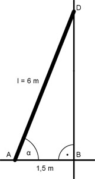

Aufgabe 65 Welchen Anstellwinkel hat eine 6 m lange Leiter, deren Fußpunkt 1,5 m von der Wand entfernt ist?  Im Dreieck ABD: 1,5 m cos α = --------- = 0,25 --> α = 75,5° 6 m
Aufgabe 65 Welchen Anstellwinkel hat eine 6 m lange Leiter, deren Fußpunkt 1,5 m von der Wand entfernt ist?
